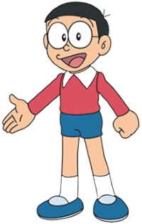

Doraemon

The robotic cat from the future who helps Nobita with his gadgets.
Nobita

A kind but lazy boy who always relies on Doraemon.
Shizuka

Nobita’s best friend and future wife – smart and sweet.
The robotic cat from the future who helps Nobita with his gadgets.

A kind but lazy boy who always relies on Doraemon.
Nobita’s best friend and future wife – smart and sweet.